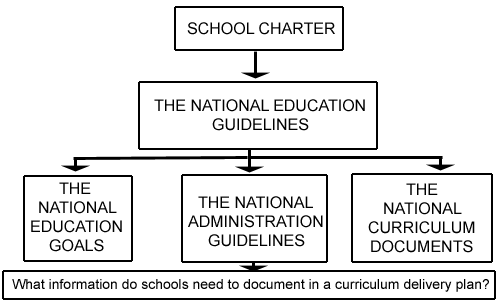

Curriculum plans Curriculum plans |
What is a Curriculum Delivery Plan?
A curriculum delivery plan provides an overview of what, and how, the school
curriculum will be delivered. There are many decisions that schools can
make at a local level about how to deliver curriculum in order to meet
the needs of their students and fulfil the aims and goals of the community.
There are however some key points that provide national guidance for schools
– The National Education Guidelines and in particular, The National
Administration Guidelines.

| The National Administration Guidelines |
Key Implications For Schools |
|
NATIONAL ADMINISTRATION GUIDELINE ONE
Each Board of Trustee is required to foster student achievement by providing teaching and learning programmes which incorporate the New Zealand Curriculum (essential learning areas, essential skills and attitudes and values) as expressed in National Curriculum Statements.
Each Board, through the principal and staff is required to:
-
develop and implement teaching and learning programmes:
-
to give priority to student achievement in literacy and numeracy especially in years 1 - 4
-
and to provide all students in years 1 - 10 with opportunities to achieve for success in all the essential learning and skill areas of the New Zealand Curriculum
-
through a range of assessment practices, gather information that is sufficiently comprehensive to enable the progress and achievement of students to be evaluated
giving priority first to:
-
student achievement in literacy and numeracy, especially in years 1-4: and then to
breadth and depth of learning related to the needs, abilities and interests of students, the nature of the school's curriculum, and the scope of the New Zealand curriculum (as expressed in the National Curriculum Statements)
-
on the basis of good quality assessment information, identify students and groups of students:
-
who are not achieving
-
who are at risk of not achieving
-
who have special needs
and aspects of the curriculum which require particular attention
|
Develop and document a teaching and learning programme that:
-
covers the national curriculum to year 10 (or appropriate to the year groups in the school)
-
describes the breadth and depth of delivery appropriate to student needs, abilities and interests
-
describes the emphasis on the development of literacy and numeracy skills especially during years one to four.
Develop and document how the school will assess and evaluate the progress and achievement of students and groups of students with priority given to achievement in literacy and numeracy.
Develop and document how the school will assess and evaluate the progress and achievement of students and groups of students with priority given to achievement in literacy and numeracy.
Develop and document procedures for collating assessment information to identify students and groups of students who are:
-
not achieving
-
at risk of not achieving
-
who have special needs or abilities.
Analyse and report information on the achievement of students as a whole and by cohort such as year group, age, gender and ethnicity to evaluate the quality of learning in aspects of curriculum.
Develop and document how the school will action programmes to address:
-
the learning needs of students
-
curriculum issues
-
the consultation, plans and targets for improving the achievement of Māori students.
|
|
NATIONAL ADMINISTRATION GUIDELINE 2
Each Board of Trustees with the principal and teaching staff is required to:
-
develop a strategic plan which documents how they are giving effect to the National Education Guidelines through their policies, plans and programmes, including those for curriculum, assessment and staff professional development;
-
maintain an on-going programme of self-review in relation to the above policies, plans and programmes, including evaluation of information on student achievement;
-
report to students and parents on the achievement of individual students, to the school community on achievement of students as a whole and by groups (identified through 1 iii above) including the achievement of Māori students against the plans and targets referred to in 1 v above.
-
develop and implement teaching and learning strategies to address the needs of students and aspects of the curriculum identified in iii above; and in particular
-
in consultation with the school's Māori community, develop and make known to the school's community policies, plans and targets for improving the achievement of Māori students;
-
provide appropriate career education and guidance for all students in year 7 and above, with a particular emphasis on specific career guidance for those students who have been identified by the school as being at risk of leaving school unprepared for the transition to the workplace of further education/training.
|
Develop and document a strategic plan that outlines and puts onto operation:
-
the ongoing implementation of the National Education Guidelines;
-
the strategies developed as a result of the evaluation of information on student achievement - individual and school wide;
-
plans for professional development derived from teacher appraisal and curriculum review.
The school should outline a review plan which covers policies, plans and relates student achievement to the evaluation of aspects of curriculum over time.
Document, and report to students, parents and the community the outcomes of the ongoing plan for school self review that specifically includes evaluation of information about students' achievement and in particular reports against the targets for Māori achievement.
Develop and document procedures to identify students in year 7 and above who are at risk of leaving school and implement career and guidance programmes that will prepare them and others for the workplace or further education and training.
|
What should a curriculum delivery plan contain?
-
Describe the depth and breadth of curriculum programmes in the school appropriate to student needs, abilities and interests.
-
Describe the emphasis on the development of literacy and numeracy skills especially during years 1 to 4.
-
Describe the philosophy of teaching and learning that will underpin the delivery of the curriculum, especially for identified areas where learning is tracked, for example, te reo, English, mathematics.
-
Describe the school's assessment philosophy and document procedures for collating assessment information to identify students and groups of students who are:
-
not achieving;
-
at risk of not achieving;
-
who have special needs or abilities.
- Describe the school-wide assessment model including assessing individual
learning and collating school-wide achievement information and the uses
of assessment information to:
-
inform strategic planning;
-
evaluation of curriculum and teaching programmes;
-
improve student learning;
-
ongoing school self-review;
-
reporting to students, parents, and the community;
-
Describe school standards for achievement and how these are reported.
-
Outline the strategies targeted to improve Māori achievement.
-
Provide a description of how curriculum is reviewed and an ongoing plan for review.
Care must be taken when writing delivery plans to ensure that their real purpose is not to allow "instrumental processes and procedures to become ends in themselves" (Sergiovanni, 1992:15). The real purpose is to develop a consciousness about quality learning in the school that represents a collaborative approach to consistent practice in meeting national requirements. A curriculum delivery plan provides a framework for meeting the dynamic and ever changing needs of the student population through the provision of curriculum delivery that is responsive to their learning, yet accountable.
Where does The Arts Curriculum fit in?
The Arts is an essential learning area and should be represented and described in terms of the allocation of learning time for each discipline as students move through a school. The breadth and depth of curriculum delivery in the four arts disciplines should be described in terms of how this may change as students progress through the school. For primary schools, there can be a close link between the arts learning experiences and the current emphasis on literacy and numeracy. The four unique disciplines offer a wide range of contexts for learning across the curriculum. In secondary schools, there will be programme details such as options and co-curricular arts activities that will influence overall depth and breadth of the essential learning areas. From year 11 to 13 student choices of subject define depth and breadth.
Approaches to assessment should be appropriate to the learning levels described in the curriculum document. Integral to this approach is the cycle of action and reflection.
Achievement standards for the arts are a useful tool for monitoring achievement and progress. Advice and guidance on assessing and reporting in the arts should be consistent and related to the depth and breadth of curriculum.
|